Research
Data-Driven Discovery
Genevera’s group develops new statistical machine learning tools to help people make reliable discoveries from large and complex data sets, especially in neuroscience and biomedicine.
Research Areas
Statistical Machine Learning
Graphical Models
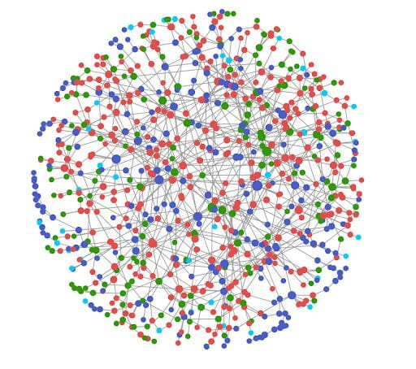
We develop new types of probabilistic graphical models and graph learning strategies for representing, discovering, and visualizing relationships in large data sets. Our work includes developing new classes of graphical models for diverse data types and multi-modal data as well as new graph learning strategies to tackle challenges encountered in neuroscience and beyond.
Key Publications:
- Here
Data Integration
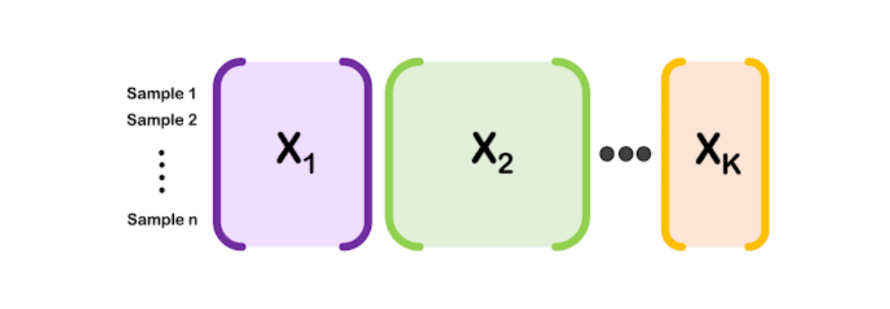
Large data sets are often diverse, with multiple types of features measured on the same set of subjects or observations. We have developed a variety of interpretable machine learning techniques for discovering joint patterns in this so-called mixed multi-modal data.
Key Publications:
- Here
Clustering
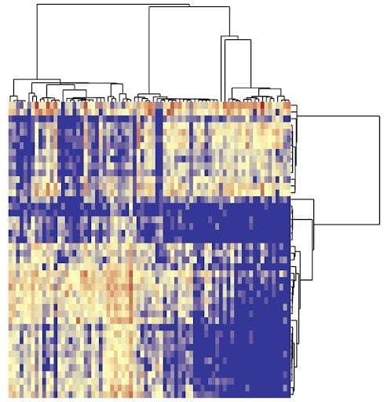
Clustering seeks to find groups in large data sets. We have developed several convex clustering approaches that offer accurate, principled, and flexible strategies along with built-in visualizations for clustering.
Key Publications:
- Here
Dimension Reduction
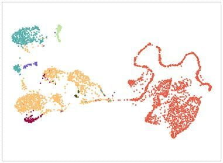
Dimension reduction techniques are used for visualizing, exploring, and discovering patterns in large data sets. We have developed many dimension reduction techniques for complex and structured data; these include sparse tensor decompositions and generalizations of PCA for structured or multi-modal data.
Key Publications:
- Here
Sparsity & High-Dimensional Statistics
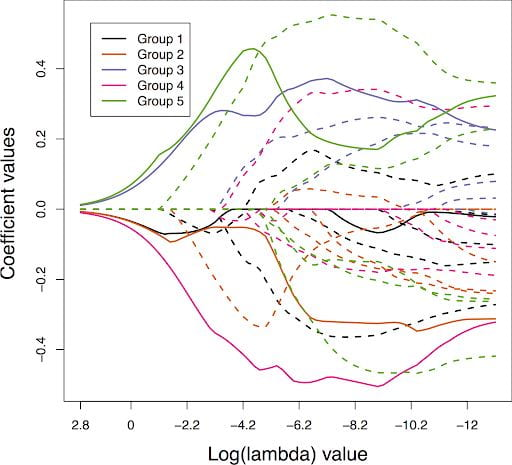
Much of our research lies in the area of high-dimensional statistics, where the number of features exceeds the number of samples. A major focus in this area is on sparsity and structured sparsity to enhance feature selection and interpretability.
Key Publications:
- Here
Tensors
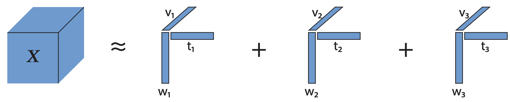
Directly working with tensor, or multi-way array, data yields many computational and statistical advantages. Our work has focused on developing interpretable tensor decomposition strategies with applications in neuroscience, chemometrics, and genomics.
Key Publications:
- Here
Ensemble Learning
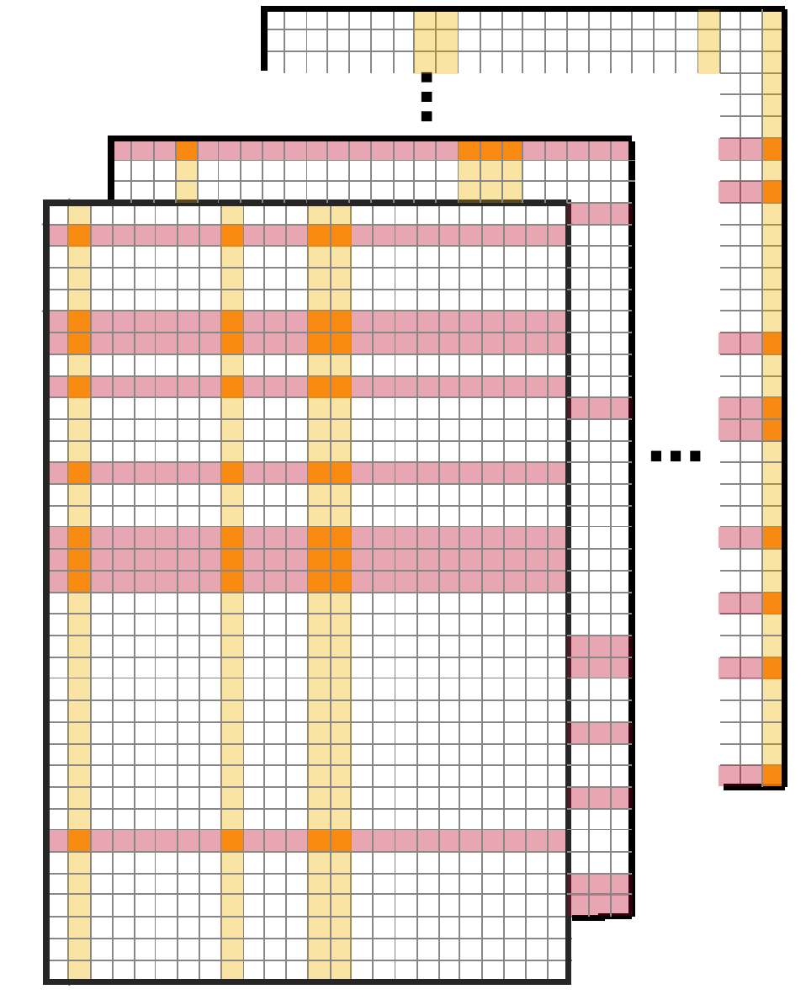
Recently, we have begun developing new computationally efficient ensemble learning strategies called minipatch learning that also lead to improved accuracy and interpretability.
Key Publications:
- Here
Quilting & Patchwork Learning
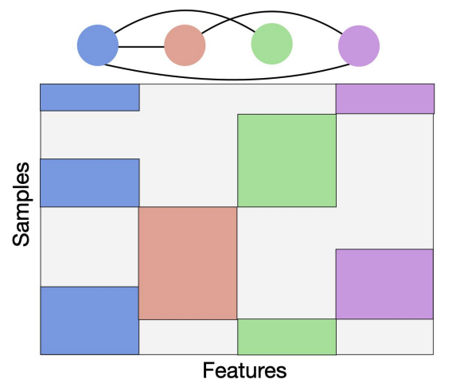
In neuroscience, data integration, causal panel data and more, we often observe data in patches or blocks with huge portions of data that is not missing at random. We recently have developed new unsupervised approaches in this patchwork learning setting.
Key Publications:
- Here
Neuroscience
Connectomics
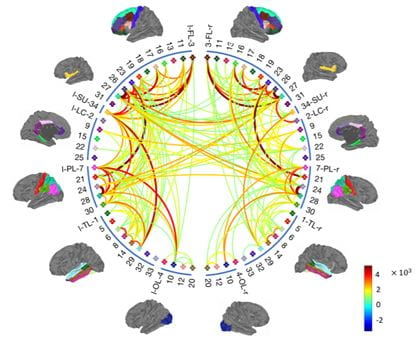
Connectomics seeks to understand how brain regions or neurons are structurally and functionally connected. Our research has focused on two aspects: developing new techniques to discover patterns in connectomics data and developing new techniques to learn functional connections from neural activity.
Key Publications:
- Here
Pattern Discovery
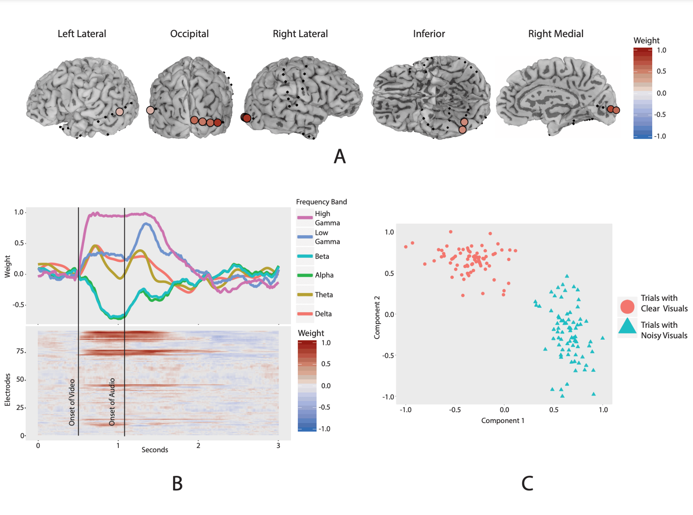
Our research seeks to discover scientifically interpretable patterns from large-scale neuroscience data using a combination of statistical and interpretable machine learning approaches. We have applied our techniques to many types of macro and micro-scale recording and imaging technologies including MRI, functional MRI, diffusion imaging, EEG, PET, ECoG, calcium imaging, spike trains, and many more.
Key Publications:
- Here
AI Ethics
Interpretable Machine Learning
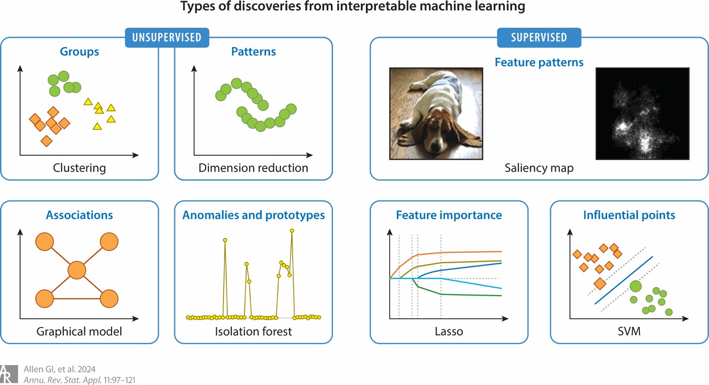
Recently, we have begun working on statistical challenges in interpretable machine learning. Our focus is on developing validation and uncertainty quantification strategies for machine learning interpretations including feature importance and unsupervised discoveries.
Key Publications:
- Here
Algorithmic Fairness
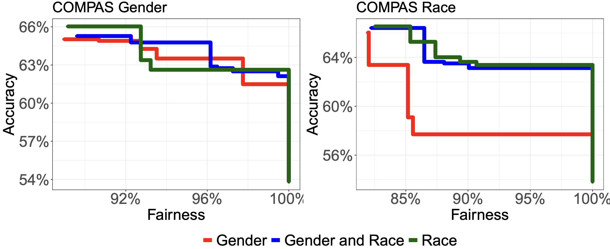
Machine learning algorithms can often inadvertently discriminate against certain subgroups by exacerbating subtle biases in historic data. Our recent work in the area of algorithmic fairness has sought to develop ways to audit and interpret bias mitigation strategies in machine learning.
Key Publications:
- Here
Biomedicine
Genomics
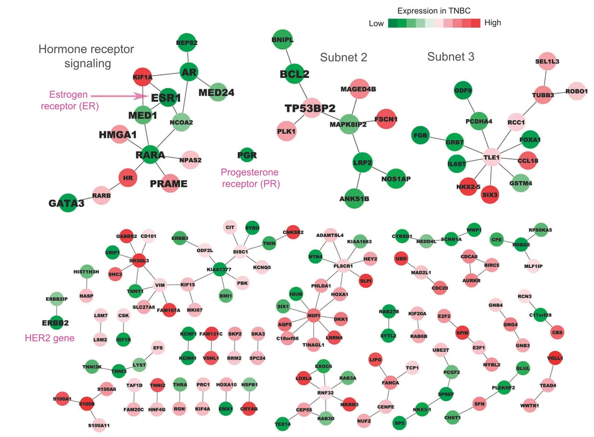
Much of our research program has been inspired by challenges in high-throughput genomics and multi-omics data. We have developed new statistical machine learning techniques and applied these to study genomic mechanisms in cancer and neurological diseases.
Key Publications:
- Here